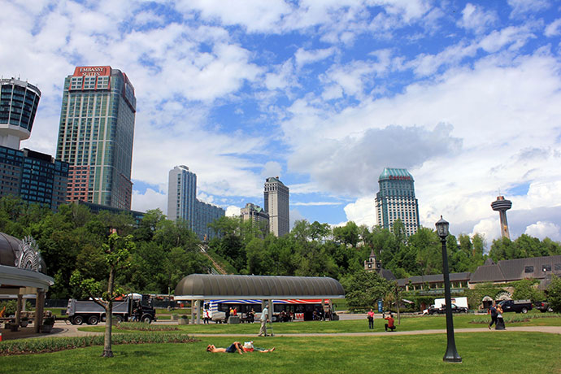
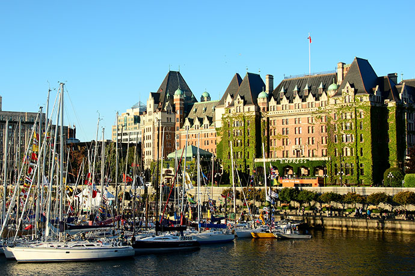
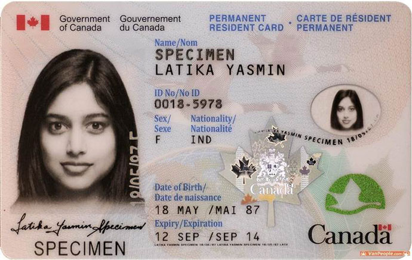

项目优势：
一步到位拿绿卡
投资无风险
被动投资方式灵活
无语言要求
政策解读：
2012年3月21日-2013年3月20日，魁省在全球范围内开放接收2700个投资移民申请。
2013年8月1日，魁省项目重启，全球仅接受1750个申请，且首次采用了随机抽签方式。
2015年1月19日-3月20日，魁省项目重新开放，名额仍为全球1750人，且首次采用基金公司配额发放制。
2015年8月31日-2016年1月31日，魁省项目名额不变，仍维持基金配额制。
2016年5月30日-2017年2月28日，魁省项目全球名额增长至1900人，中国区(含香港澳门)名额增至1330人，继续基金配额制。
2017年5月29日-2018年2月23日，魁省项目重开，名额不变，继续基金配额制。
申请条件：
在过去5年中，有2年以上的经商管理经验
拥有160万以上加币家庭净资产
投资80万加币，5年后无息返还；或一次性支付22万加币给加拿大政府
能够清晰解释资产的积累和来源
22岁以下子女可随行
办理流程：
签约受理，准备申请材料
文件制作，递交魁省申请
参加面试，或免面试补件
获省提名，完成投资打款
联邦阶段，递交联邦申请
全家体检，获得正式签证
登陆魁省，领永居枫叶卡
五年到期，永居身份续签
枫叶卡样本：

国家概述：
加拿大位于北美洲，与美国接壤，是一个高度发达的资本主义国家，拥有丰富的自然资源和发达的科学技术，是世界上生活品质最高、社会最富裕、经济最发达的国家之一，素有"枫叶之国"的美誉。
加拿大领土面积位居世界第二，人口却只有中国的四十分之一。作为传统老牌移民国家，加拿大投资移民项目运行时间长，移民体系完善，再加上良好的环境，优质的教育资源，优厚的社会福利，加拿大很自然就成为移民首选的国家之一。